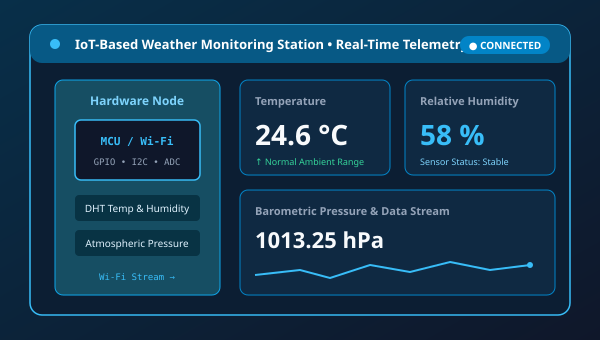

IoT-Based Weather Monitoring System
An Internet of Things (IoT) engineering project designed to capture, process, and broadcast real-time atmospheric parameters. The system interfaces physical sensor modules with a microcontroller to collect temperature, relative humidity, and barometric pressure data.
- Automated multi-sensor data acquisition
- Wireless transmission of telemetry to a central dashboard
- Continuous ambient climate monitoring for local environmental tracking